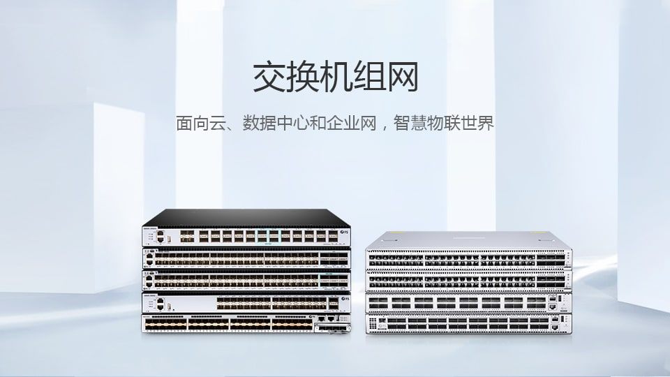
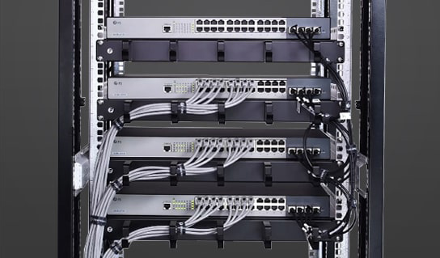

交换机组网
面向云、数据中心和企业网，智慧物联世界

-
交换机组网产品概述
自创立以来，飞速(FS)定位于全球数据中心&云硬件解决方案领先提供商， 一直致力于自主研发设计创新型以太网产品，提供基于以太网的统一交换 架构数据中心解决方案与产品服务。其中,飞速(FS)1/10/40G 光模块以 其100%兼容各品牌设备，高性价比的特点深受用户信赖，而S系列和N系列 交换机是飞速(FS)自主研发生产的新一代高性能、高安全、智能化以太网交换机， 帮助用户建设高性价比、高可靠性的优化网络，旨在实现数据中心网络的灵活性、 高效率和低成本。
观看视频 - 
产品解决方案 查看更多
-

10G S5800-48F4S系列交换机解决方案
飞速（FS）S5800-48F4S系列交换机搭配飞速（FS）光模块,实现1/10G光纤传输，构建经济高效的光纤网络布线系统10GBASE-SR...
了解更多 -

飞速(FS) 40G QSFP+ SR4/CSR4光模块直连解决方案
40G QSFP+SR4/CSR4光模块连接方案 40G QSFP+ SR4/CSR4光模块直连解决方案要想实现40G QSFP+ SR4/...
了解更多 -

思科(Cisco) 100G-QSFP28-LR4 光模块直连方案
思科(Cisco) 100G-QSFP28-LR4 光模块高速数据中心布线方案思科(Cisco) 100G-QSFP28-LR4 光模块直连方...
了解更多 -

飞速(FS) 10GBASE-LR SFP+光模块布线方案
飞速(FS) 10GBASE-LR SFP+光模块布线方案飞速(FS) S5720系列32X-EI-AC交换机系统之MTP光纤跳线布线方案10...
了解更多